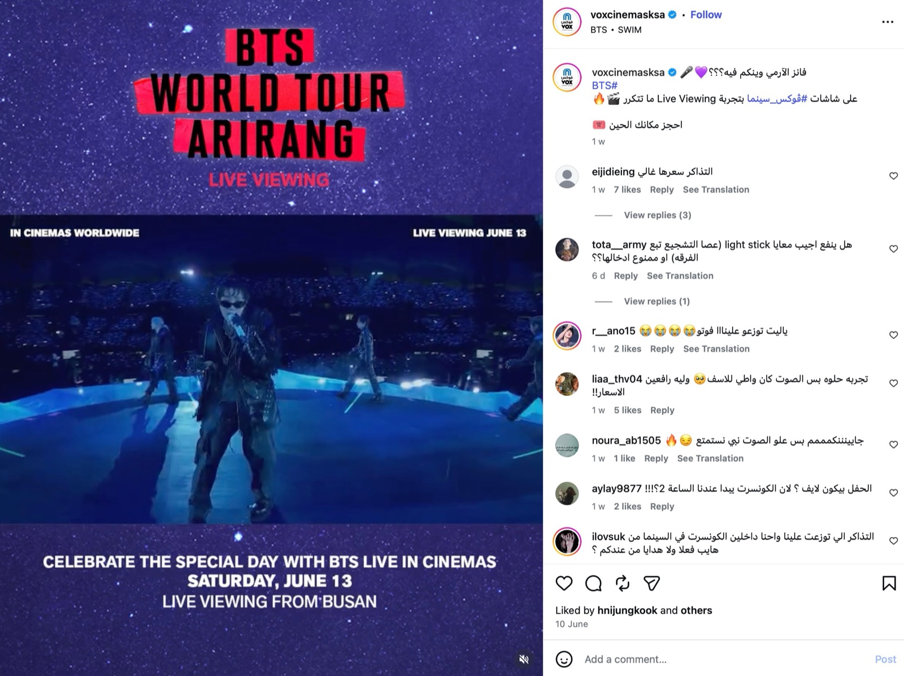
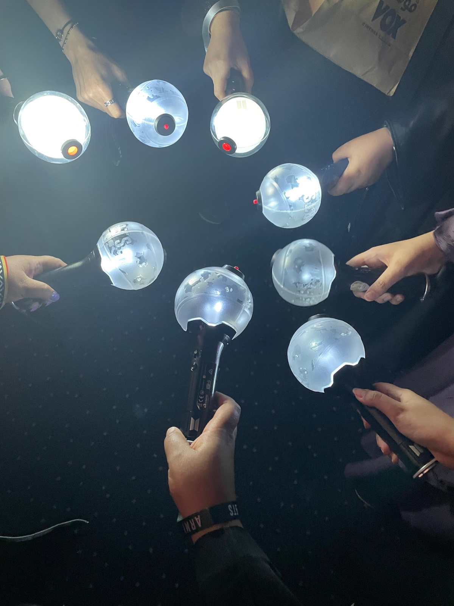
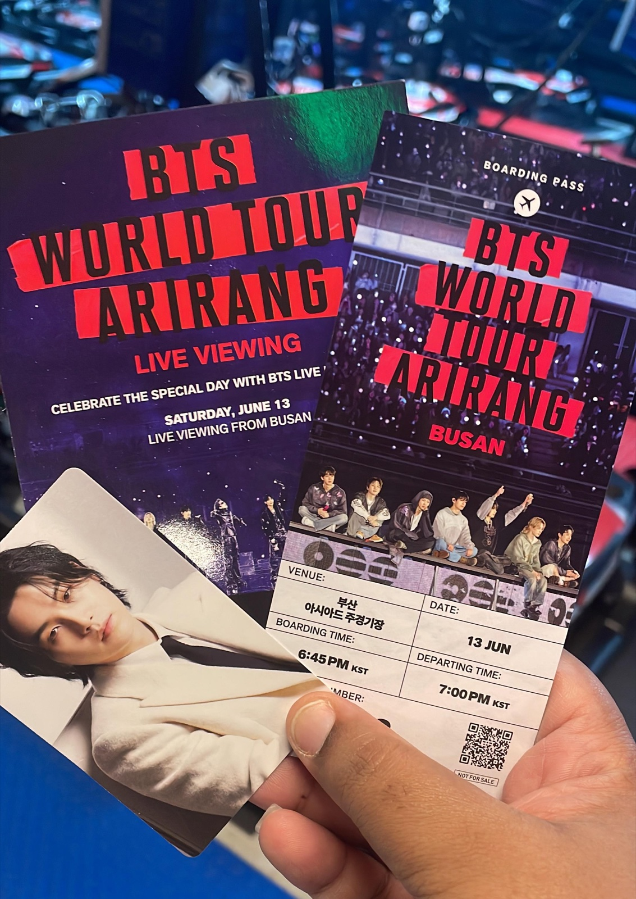
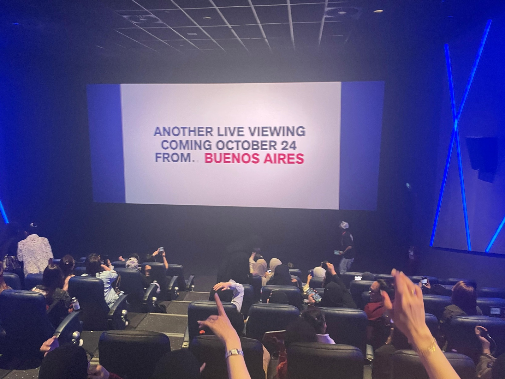

"BTS가 사우디에 오지 못한다면 우리가 영화관으로 가면 되죠."
지난 6월 13일, 방탄소년단(BTS) 데뷔 기념일을 맞아 사우디아라비아 전국 《복스 시네마스(VOX Cinemas)》에서는 방탄소년단(BTS) 월드투어 〈아리랑(ARIRANG)〉의 부산 아시아드 주경기장 '라이브뷰잉(Live Viewing: 공연 실황 상영)'을 진행했다. 이날 상영된 공연은 방탄소년단이 군 복무 전 마지막 완전체 무대를 선보였던 부산 아시아드 주경기장 공연 실황으로, 팬들에게 특별한 의미를 지녔다. 34개 도시 85회 공연으로 역대 한국 아티스트 최대 규모를 기록한 〈아리랑(ARIRANG) 월드투어〉는 데뷔 기념일이라는 상징적인 날짜와 맞물리며 전 세계 팬들에게 깊은 감동을 안겼다.

복스 시네마스가 소셜미디어를 통해 홍보한 방탄소년단(BTS) 월드투어 '아리랑' 부산 공연 실황 라이브뷰잉 — 출처: 복스 시네마스 인스타그램(@voxcinemasksa)
사우디아라비아에서 10년 넘게 방탄소년단의 열렬한 팬이며 본인을 방탄소년단 공식 팬클럽 아미(ARMY)라고 소개하는 이만(Eman)은 올해 중동 지역이 제외된 방탄소년단 월드투어 대신 영화관에서 라이브뷰잉을 선택했다. 그는 "직접 공연을 보는 것과는 다르지만 다른 아미들과 함께 응원할 수 있어 행복했다"고 말했다. 이만이 공유한 사진과 영상에는 팬들이 응원봉인 아미밤(ARMY Bomb)을 흔들고 노래를 따라 부르며 실제 콘서트장을 방불케 하는 분위기를 즐기는 모습이 담겨 있었다.

영화관에서 방탄소년단 라이브뷰잉을 관람하며 응원봉 '아미밤(ARMY Bomb)'을 밝히고 있는 사우디 아미들 — 출처: 방탄소년단 사우디 팬 이만(Eman) 제공
이만은 방탄소년단이 데뷔한 이듬해인 2014년부터 팬 활동을 시작한 오랜 아미(ARMY)다. 현재 BTS 공식 팬클럽 골드 멤버십(Gold Membership)을 유지하고 있는 그는 10년이 넘는 시간 동안 방탄소년단을 응원해 왔다. 이만(Eman)에게 가장 특별한 기억은 2019년 리야드(Riyadh)에서 열린 BTS 콘서트다. 당시 BTS는 한국 가수 최초로 사우디아라비아에서 단독 스타디움 공연을 개최했다. 이만은 공식 팬클럽 회원에게 우선 판매된 사운드체크(Soundcheck) VIP 티켓 구매에 성공해 공연 전 리허설 무대까지 관람할 수 있었다. "정말 꿈같은 순간이었어요. 멤버들을 가까이에서 보고 사운드체크까지 관람할 수 있었던 경험은 아직도 잊을 수 없어요."
중동이 빠진 방탄소년단(BTS) 월드투어, 영화관으로 향한 사우디 팬들
하지만 올해 공개된 〈아리랑(ARIRANG) 월드투어〉 일정에는 사우디아라비아를 비롯한 중동 지역 공연이 포함되지 않았다. 이에 현지 팬들은 해외 공연 티켓 확보에 나섰지만 현실적인 장벽에 부딪혔다. 이만(Eman) 역시 비교적 접근성이 좋은 인도네시아 공연 티켓 예매를 시도했지만 치열한 경쟁 속에 여러 번 예매에 실패했다. 이후 되판매(Resale) 시장에서 정가의 10배를 훌쩍 넘는 가격에 거래되는 티켓 가격에 관람을 포기할 뻔했으나 결국 230달러(약 35만 원)에 올해 12월 26일부터 27일까지 양일간 개최되는 방탄소년단의 인도네시아 자카르타(Jakarta) 콘서트 티켓을 확보했다.
반면 직접 공연장을 찾을 수 없게 된 다른 사우디 팬들은 영화관에서 아쉬움을 달랬다. 이만에 따르면 리야드 사하라몰(Sahara Mall) 복스 시네마스에서는 최초 배정된 상영관이 매진된 뒤 추가 상영관까지 운영해야 할 정도로 관객이 몰렸다.
라이브뷰잉 관람료는 대부분 100사우디리얄(약 4만 원) 수준으로 일반 영화 관람료보다 높은 편이었다. 일부 팬들은 가격에 부담을 느끼기도 했지만, 현지 팬들 사이에서는 "직접 공연장을 찾는 비용에 비하면 훨씬 저렴하다"는 반응도 나왔다. 중동 지역 공연이 제외된 상황에서 많은 팬들은 영화관 라이브뷰잉을 현실적인 대안으로 받아들이는 분위기였다. 팬들은 영화관에서도 실제 콘서트 현장과 다름없는 방식으로 공연을 즐겼다.
이번 라이브뷰잉에서는 일반 영화 상영과 달리 기념 티켓과 포토카드가 제공됐다. 사우디 영화관에서는 보통 온라인 예매 후 큐알(QR)코드나 영수증을 제시하고 입장하는 방식이 일반적이지만, 이날은 실제 콘서트 티켓을 연상시키는 실물 티켓이 제작돼 팬들의 호응을 얻었다.

BTS 라이브뷰잉 관람객에게 제공된 기념 티켓과 포토카드 — 출처: 방탄소년단 사우디 팬 이만(Eman) 제공
사우디 아미들의 아리랑 떼창
이만이 촬영한 영상에는 많은 팬들이 한국어 가사를 따라 부르며 떼창하는 모습이 담겨 있었다. 특히 아리랑 무대에서는 현지 팬들이 "아리랑 아리랑 아라리요, 아리랑 고개로 넘어간다"는 한국어 가사를 함께 따라 부르는 장면이 눈길을 끌었다. 이만은 "생각보다 많은 팬들이 가사를 외우고 있었다"며 "한국어를 모르는 팬들도 후렴구를 따라 부르며 공연을 즐겼다"고 전했다.
과거 온라인 스트리밍과 음원 감상이 중심이었다면, 최근에는 콘서트 실황 영상 관람, 팬 커뮤니티 활동 등 보다 적극적인 참여형 문화로 확장되고 있다. 이 같은 모습은 최근 사우디에서 나타나는 케이팝 소비 문화의 변화를 보여주는 단면이다.
오는 10월에는 방탄소년단 아르헨티나(Argentina) 공연 실황 라이브뷰잉이 사우디 내 복스 시네마스에서 상영될 예정이다. 직접 공연장을 찾지 못한 팬들은 다시 한 번 영화관을 찾아 방탄소년단을 만날 준비를 하고 있다. 이만은 자카르타 콘서트 티켓을 확보했음에도 계속 라이브뷰잉이 상영될 때마다 관람하겠다는 확고한 의지를 드러냈다. "언젠가 방탄소년단이 다시 사우디아라비아를 찾아주기를 바란다"며 "그날이 오기 전까지는 영화관뿐만 아니라 다른 해외여행을 통해서라도 방탄소년단을 만나러 갈 것"이라고 말했다.

10월 상영 예정인 방탄소년단 아르헨티나 공연 실황 라이브뷰잉을 홍보하는 영화관 스크린 — 출처: 방탄소년단 사우디 팬 이만(Eman) 제공
사진출처 및 참고자료
— 방탄소년단 팬 이만(Eman) 제공
— 복스 시네마스(Vox Cinemas) 인스타그램(@voxcinemasksa), instagram.com/voxcinemasksa
— 《로이터통신(Reuters)》 (2026. 03. 20). "Kpop boyband BTS to visit 34 cities in a year for comeback world tour 'ARIRANG'." reuters.com